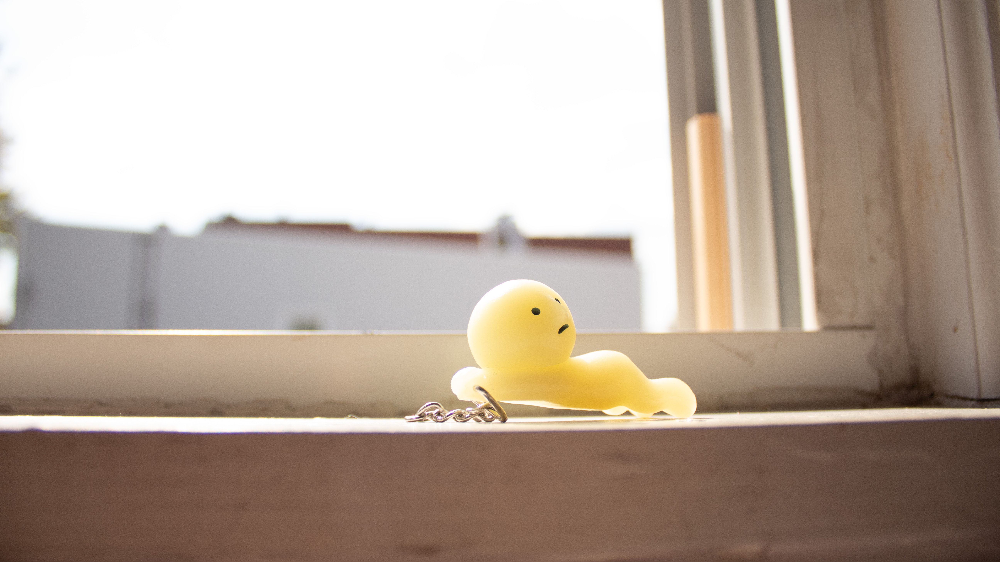

In this project I wanted to emphasize the blurry depth of field in the background for the edited field blur. I used the field blur tool for the edited photograph. For the deep depth of field I kept the smiski and the background all in focus. I maintained the same positioning for the smiski and used the grid lines in an attempt to keep everything positioned the same, while taking both photographs.